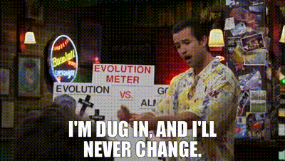

Experiments Can’t Reduce Partisan Animosity
There is a new paper published yesterday in PNAS that feels like a long-overdue correction to the polarization literature. The paper evaluates 77 treatments from 25 studies (alongside two large-scale experiments) to argue that interventions designed to reduce partisan animosity have modest effects, and these effects vanish rapidly within a very short time frame. The authors say that:
[These findings] reveal the uneven utility of these interventions. They serve as valuable tools for testing the psychological mechanisms of polarization, but our findings indicate they are not, on their own, a scalable solution for reducing societal-level conflict.
This takeaway has certain implications for a certain kind of research program: the idea that we might manipulate ideology in experimental settings and scale that into real-world depolarization.
The Question of Manipulability
I believe that this is a long-overdue correction for a reason. Much of the literature on polarization has operated under a tacit assumption: that political attitudes are malleable.
If you frame an issue one way, you can shift people’s support for particular candidates. If you “humanize” out-partisans, animosity declines. If you push people into a room and make them discuss a question for 15 minutes, you see that ideology is more moderate than it would be1. The implicit theory of political culture operating here is that people’s ideologies are weak, malleable, and ready to be channeled into something “good” if only we have the “right” intervention.
1 That is, they are more likely to be 2, 3, or 4 in a Likert scale than being 1 or 5 on a 5-point scale.
These findings seem persuasive, but they rest on a thin theory of political culture. A large body of research on political socialization and personal culture across the life-course runs up against its basic assumptions. We know, for instance, that people’s attitudes—more often than not—remain stable around personal baselines (Kiley and Vaisey 2020), that political frameworks developed early in one’s life shape them across the life-course (Jennings and Markus 1984; Sears and Funk 1999) and that our dispositions emerge quite early (Elder 1974; Grasso et al. 2019).
 |
|---|
| “People Don’t Change” |
More importantly, though, we have theoretical (Achen 1992; Bartels and Jackman 2014) and empirical (Ghitza, Gelman, and Auerbach 2023) reasons to expect that the experimental contexts are slightly dubious settings to really think that people update their long-standing attitudes in response to this random treatment they get in a one-shot setup. This obviously doesn’t mean that experiments are bad per se, but it does mean that experiments simply cannot change dispositions.
So, when we see a clever experimental design that updates average survey responses in a closed setting, the most likely explanation—as far as I am concerned—is temporary “accessibility” to certain considerations at the moment, not a reliable update in thick dispositional tendencies.
The Question of Polarization
If political culture is indeed durable, this means that depolarization cannot be engineered at the individual level. The “real” mechanisms lie somewhere else: the incentives elites face, the institutional rules, and the socialization environments that influence individuals over the long run.
This acknowledgment, however, invites a different question about this whole enterprise. Much of this research assumes that partisan disagreement is pathological. But that is not obvious. People disagree about politics because they have different ideas about society. That variation is not bad—it is how democratic politics is supposed to work. This is why, I feel, that the recent turn from attitudinal polarization to affective polarization was a healthy revision for political science, since the former does not really warrant a misguided “intervention” to the public to begin with.
Once we reframe the problem away from public opinion to institutions, the question becomes not the elimination of partisan animosity in the aggregate, but how to engineer political institutions so that conflict is channeled productively. Once framed this way, the obsession with nudges and lab treatments looks even more misplaced. As the authors propose, we should rather “address the elite behaviors and structural incentives that fuel partisan conflict.”